13 Les corrélations
Afin de pouvoir adopter les bonnes mesures éducatives pour leurs enfants, des chercheurs se sont demandés où ils risquaient le moins d’être arrêtés en possession de marijuana. Ces chercheurs se sont donc demandés s’il existait un lien entre le nombre de colonies d’abeilles productrices de miel dans une région et le nombre d’arrestations pour possession de marijuana. (Cet exemple s’inspire des données présentées ici : http://tylervigen.com/view_correlation?id=1582).
13.1 Exercices
13.1.1 Enoncés
Importer le jeu de données dans la feuille de calcul “miel” en ligne de commande. Donnez lui le nom “miel”.
13.1.2 Solution
import(file='Exercices.Bruxelles.xlsx',
dir="C:/Users/votre_nom/votre_dossier/",
type='Fichier Excel',
dec='.',
sep=';',
na.strings='NA',
sheet='miel',
name='miel')13.2 Réaliser une corrélation
13.2.1 Corrélations complètes
13.2.1.1 Avec les boîtes de dialogue
Pour réaliser une corrélation avec easieR, il faut choisir ‘analyses - Tests d’hypothèses’ (Figure 13.1).
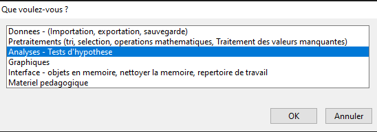
Figure 13.1: On commence par choisir ‘Analyses - Tests d’hypothèses’.
Ensuite, on choisit corrélations (Figure 13.2).
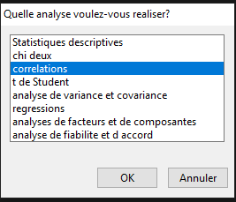
Figure 13.2: Dans le premier menu, il faut choisir ’analyses - Tests d’hypothèses.
Le menu suivant permet de choisir le type d’analyses de corrélations qu’on veut réaliser. La différence majeure entre l’analyse détaillée et la matrice de corrélations est qu’il y a plus d’informations fournies avec l’analyse détaillée. Elle est adaptée quand on fait une analyse ou un petit nombre d’analyses. Quand le nombre d’analyses augmente, il est préférable de choisir l’option ‘Matrice de corrélations’ (Figure 13.3). Les deux autres options seront développées ultérieurement.
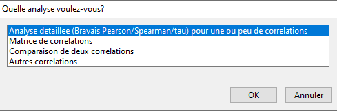
Figure 13.3: Choisir l’analyse détaillée..
Pour le moment, nous n’avons pas abordé la distinction entre une corrélation et une corrélation partielle/semi-partielle (Figure 13.4). Les corrélations renvoient au lien entre deux variables alors que les corrélations partielles renvoient au lien entre des variables quand on a contrôlé l’impact de variables parasites.
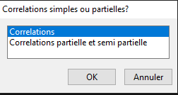
Figure 13.4: Choisir ‘Correlations’
On peut directement accéder à cette étape en utilisant la fonction corr.complet
L’étape suivante consiste à choisir le jeu de données.
Dans l’exemple présenté, il s’agit de “miel” (Figure 13.5).
Il faut noter que cette étape peut ne pas exister s’il n’y a qu’un seul jeu de données dans la mémoire de R.
S’il n’y a pas de jeu de données, easieR va automatiquement proposer d’importer les données.
Figure 13.5: Choix du jeu de données
On entre à présent dans les choix propres à l’analyse. Si une corrélation est un lien sans direction, la représentation graphique est un nuage de points et il faudra placer une variable en ordonnées et une en abcisse (Figure ??). Dans notre exemple, nous pensons que c’est le nombre de colonies d’abeilles productries de miel (Figure ??, gauche) qui est le prédicteur du nombre d’arrestations pour possession de marijuana (Figure ??, droite).
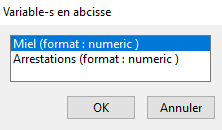
Figure 13.6: Choix de la variable en abcisse (à gauche) et en ordonnée (à droite)
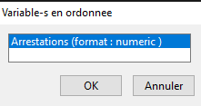
Figure 13.7: Choix de la variable en abcisse (à gauche) et en ordonnée (à droite)
Ensuite, on a la possibilité de choisir des sous-groupes. Si on ne veut pas de sous-groupes, cela signifie que l’analyse sera réalisée sur l’intégralité des données. En revanche, si on choisit des sous-groupes, la corrélation sera calculée pour chaque sous-groupe. Cela implique d’avoir une variable qualitative pour laquelle il est possible de subidiviser le jeu de données en un ensemble plus petit de jeux de données. En l’occurence, nous voulons réaliser l’analyse sur l’intégralité des données (Figure 13.8).
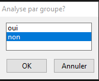
Figure 13.8: En choisissant ‘non’, on fait l’analyse sur l’échantillon complet
L’option suivante permet de décider quelles analyses seront réalisées. L’analyse paramétrique permet d’obtenir la corrélation de Bravais-Pearson, le test non paramétrique permet d’obtenir le \(\rho\) de Spearman et le \(\tau\) de Kendall. Les statistiques robustes consistent à estimer l’intervalle de confiance autour de la corrélation estimée à l’aide de bootsrap. Enfin, les facteurs bayesiens permettent de réaliser l’analyse en utilisant une approche bayesienne plutôt que fréquentiste (Figure 13.9).
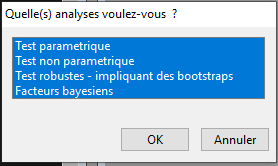
Figure 13.9: Choix des analyses à devoir réaliser.
Comme les statistiques robustes et/ou les facteurs bayesiens ont été choisis, il faut préciser le nombre d’itérations souhaitées. Il faut choisir un grand nombre, avec un minimum de 500. Il est assez fréquent d’utiliser 1000 comme seuil. Cette valeur représente un bon compromis entre précision et vitesse (Figure 13.10).
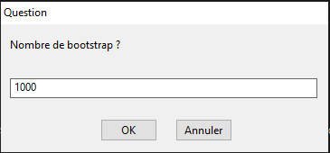
Figure 13.10: Choix du nombre d’itérations pour le bootstrap.
Par ailleurs, comme nous avons opté pour les facteurs bayesiens, il faut fixer un prior. Ce prior est la taille de la corrélation (en valeur absolue) qu’on s’attend à avoir. Si easieR permet de préciser la valeur numérique en ligne de commande, les boîtes de dialogue ne permettent d’utiliser que les étiquettes préprogrammées. En l’occurrence, on a peu de raison de penser que la corrélation va être élevée. Nous optons donc sur la plus petite des taille d’effet (Figure 13.11).
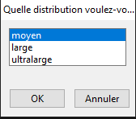
Figure 13.11: Prior pour les facteurs bayesiens.
La plupart du temps, il est préférable d’analyser les données sans les valeurs influentes. Néanmoins, il y a des exceptions : quand on travaille avec une population pathologique, il est normal de s’attendre à des valeurs influentes. Par ailleurs, certains chercheurs préférent laisser toutes les observations ou utiliser une autre alternative (e.g., les tests non paramétriques) que de supprimer les valeurs influentes. Une attitude minimale est d’aller identifier s’il y a des valeurs influentes. Par défaut, c’est le test de Grubbs qui est utilisé pour identifier la présence des valeurs influentes. Entre l’analyse “sans les valeurs influentes” et “avec les valeurs influentes”, il est préférable de choisir “sans” dans la majorité des cas. Néanmoins, je trouve toujours intéressant de regarder si l’interprétation change lorsque les valeurs influentes sont présentes ou non, peu importe le sens. En effet, cela donne une appréciation de la robustesse de l’effet, et permet de s’assurer que la présence/absence de l’effet ne dépend pas que de quelques observations, c’est pourquoi je laisse tout cocher dans la Figure 13.12.
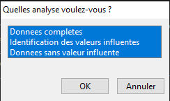
Figure 13.12: Attitude par rapport aux valeurs influentes.
La Figure 13.13 permet d’enregistrer les résultats en format Word. Comme précédemment, nous utiliserons plus loin une autre solution. Nous pouvons cocher FALSE en attendant.
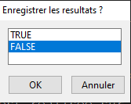
Figure 13.13: Faut-il enregistrer le document en ms word ?
13.2.1.2 Avec les lignes de commande
La fonction ‘easieR’ qui permet de réaliser une analyse de corrélation détaillée est la fonction corr.complet.
Les arguments de la fonction sont :
X : caractère qui correspond au nom de la variable ou des variables en abcisse ;
Y : caractère qui correspond au nom de la variable ou des variables en ordonnée ;
Z : caractère qui correspond au nom de la variable ou des variables à contrôler (pour des corrélations parielles) ;
data : nom du jeu de données ;
group : caractère correspondant à la ou les variables permettant de réaliser les analyses par groupe (voir section consacrée à cet effet) ;
param : caractère indiquant quelles analyses doivent être faites. Les valeurs autorisées sont : ‘Test parametrique’,‘Test non parametrique’,‘Test robustes - impliquant des bootstraps’,‘Facteurs bayesiens’, ou leur version abrégée ‘param’, ‘non param’, ‘robustes’, ‘Bayes’
save : logique indiquant s’il faut une sauvegarde en fichier msword
outlier : caractère indiquant si les analyses doivent être réalisées sur l’ensemble des données, s’il faut identifier les valeurs influentes et s’il faut réaliser l’analyse sans les valeurs influentes. Les valeurs autorisées sont : ‘Donnees completes’,‘Identification des valeurs influentes’,‘Donnees sans valeur influente’
z : notez qu’il s’agit d’un z miniscule par opposition du z majuscule présenté précédemment. Pour supprimer les valeurs influente, on peut utiliser le test de Grubbs (par défaut) ou le score z. Si z vaut NULL, le test de Grubbs sera utilisé. Si le z a une valeur numérique, cette valeur numérique sera utilisée pour déterminer l’éloignement en écart-type à partir duquel le résidu standardisé d’une observation va être considéré comme influent. Les valeurs habituelles sont : 1.96 (5%), 2.56 (1%), 3.26 (0.1%).
info : il s’agit d’un logique qui indique si des messages d’informations doivent être affichés dans la console pour expliquer à quoi correspond les boîtes de dialogue. Par défaut, la valeur est TRUE.
rscale : il s’agit du prior si ‘Bayes’ ou ‘Facteurs bayesiens’est sélectionné pour ’param’ . Cela correspond approximativement à la valeur de la corrélation qu’on s’attend à avoir.
n.boot : nombre du bootstrap pour les statistiques robustes et pour le posterior des facteurs bayesiens
html : logique. Indique s’il faut une sortie html.
corr.complet(
X=c('Miel'),
Y=c('Arrestations'),
Z =NULL,
data=miel,
group=NULL,
param=c('Test parametrique','Test non parametrique','Test robustes - impliquant des bootstraps','Facteurs bayesiens'),
save=FALSE,
outlier=c('Donnees completes','Identification des valeurs influentes','Donnees sans valeur influente'),
z=NULL,
info=T,
rscale=0.353553390593274,
n.boot=1000,
html=F)## NULL## NULL## $`Correlation entre la variable Miel et la variable Arrestations`
## $`Correlation entre la variable Miel et la variable Arrestations`$`Donnees completes`
## $`Correlation entre la variable Miel et la variable Arrestations`$`Donnees completes`$`Statistiques descriptives`
## $`Correlation entre la variable Miel et la variable Arrestations`$`Donnees completes`$`Statistiques descriptives`$`Variables numériques`
## vars n mean sd median trimmed mad min max
## Miel 1 202 2714.01 592.45 2608.0 2656.06 192.74 1200 1e+04
## Arrestations 2 202 76383.35 27169.82 90017.5 81031.52 6635.38 3500 1e+05
## range skew kurtosis se
## Miel 8800 9.19 110.57 41.68
## Arrestations 96500 -1.35 0.12 1911.66
##
## $`Correlation entre la variable Miel et la variable Arrestations`$`Donnees completes`$`Statistiques descriptives`$Graphiques
## $`Correlation entre la variable Miel et la variable Arrestations`$`Donnees completes`$`Statistiques descriptives`$Graphiques[[1]]##
## $`Correlation entre la variable Miel et la variable Arrestations`$`Donnees completes`$`Statistiques descriptives`$Graphiques[[2]]##
##
## $`Correlation entre la variable Miel et la variable Arrestations`$`Donnees completes`$`Statistiques descriptives`$`Informations sur les graphiques`
## $`Correlation entre la variable Miel et la variable Arrestations`$`Donnees completes`$`Statistiques descriptives`$`Informations sur les graphiques`[[1]]
## [1] "L'epaisseur du graphique donne la densite, permettant de mieux cerner la distribution."
##
## $`Correlation entre la variable Miel et la variable Arrestations`$`Donnees completes`$`Statistiques descriptives`$`Informations sur les graphiques`[[2]]
## [1] "Le point rouge est la moyenne. La barre d'erreur est l'ecart-type"
##
##
##
## $`Correlation entre la variable Miel et la variable Arrestations`$`Donnees completes`$`Tests de normalite`
## $`Correlation entre la variable Miel et la variable Arrestations`$`Donnees completes`$`Tests de normalite`$`Tests de normalite`
## W de Shapiro-Wilk valeur.p SW D de Lilliefors valeur.p Llfrs
## W 0.2177 0 0.3275 0
##
## $`Correlation entre la variable Miel et la variable Arrestations`$`Donnees completes`$`Tests de normalite`$`Distribution des residus`##
## $`Correlation entre la variable Miel et la variable Arrestations`$`Donnees completes`$`Tests de normalite`$QQplot##
##
## $`Correlation entre la variable Miel et la variable Arrestations`$`Donnees completes`$`Test parametrique`
## $`Correlation entre la variable Miel et la variable Arrestations`$`Donnees completes`$`Test parametrique`$Graphiques
## $`Correlation entre la variable Miel et la variable Arrestations`$`Donnees completes`$`Test parametrique`$Graphiques[[1]]##
##
## $`Correlation entre la variable Miel et la variable Arrestations`$`Donnees completes`$`Test parametrique`$`Correlation de Bravais-Pearson`
## r R.deux IC lim inf lim.sup t ddl valeur.p Bca.lim.inf
## cor -0.3248 0.1055 -0.443 -0.1955 -4.8562 200 0 -0.9006
## Bca.lim.sup
## cor -0.0658
##
##
## $`Correlation entre la variable Miel et la variable Arrestations`$`Donnees completes`$`Test non parametrique`
## $`Correlation entre la variable Miel et la variable Arrestations`$`Donnees completes`$`Test non parametrique`$Graphiques
## $`Correlation entre la variable Miel et la variable Arrestations`$`Donnees completes`$`Test non parametrique`$Graphiques[[1]]##
##
## $`Correlation entre la variable Miel et la variable Arrestations`$`Donnees completes`$`Test non parametrique`$`Rho de Spearman`
## rho rho.deux S valeur.p Bca.lim.inf Bca.lim.sup
## rho -0.64 0.4096 2252875 0 -0.7452 -0.5149
##
## $`Correlation entre la variable Miel et la variable Arrestations`$`Donnees completes`$`Test non parametrique`$`Tau de Kendall`
## tau z valeur.p
## tau -0.4482 -9.466 0
##
##
## $`Correlation entre la variable Miel et la variable Arrestations`$`Donnees completes`$`Facteurs bayesiens`
## $`Correlation entre la variable Miel et la variable Arrestations`$`Donnees completes`$`Facteurs bayesiens`$`Facteurs Bayesiens pour la correlation de Bravais-Pearson`
## Facteur bayesien Erreur r
## En faveur de l'hypothese alternative 6122.57535 0 -0.3247731
## En faveur de l'hypothese nulle 0.00016 0 -0.3247731
## R.carre
## En faveur de l'hypothese alternative 0.1054776
## En faveur de l'hypothese nulle 0.1054776
##
## $`Correlation entre la variable Miel et la variable Arrestations`$`Donnees completes`$`Facteurs bayesiens`$`Facteurs Bayesiens pour la correlation de Spearman`
## Facteur bayesien Erreur
## En faveur de l'hypothese alternative >10000 6e-05
## En faveur de l'hypothese nulle 0 6e-05
##
##
## $`Correlation entre la variable Miel et la variable Arrestations`$`Donnees completes`$`Facteurs bayesiens sequentiels`##
##
## $`Correlation entre la variable Miel et la variable Arrestations`$`Valeurs influentes`
## $`Correlation entre la variable Miel et la variable Arrestations`$`Valeurs influentes`$`Test de Grubbs`
## G U valeur.p
## G 13.30141 0.115384 0
##
## $`Correlation entre la variable Miel et la variable Arrestations`$`Valeurs influentes`$`Valeur la plus elevee`
## [1] "highest value 7453.23397513205 is an outlier"
##
## $`Correlation entre la variable Miel et la variable Arrestations`$`Valeurs influentes`$`observations influentes`
## Miel Arrestations res residu
## 202 10000 100000 7453.234 7453.234
## 201 1200 3500 -2030.161 -2030.161
##
## $`Correlation entre la variable Miel et la variable Arrestations`$`Valeurs influentes`$`Synthese des observations influentes`
## Information Synthèse
## n Nombre d'observations retirees 2
## % d'observations considerees comme influentes 0.99 %
##
##
## $`Correlation entre la variable Miel et la variable Arrestations`$`Donnees sans valeur influente`
## $`Correlation entre la variable Miel et la variable Arrestations`$`Donnees sans valeur influente`$`Statistiques descriptives`
## $`Correlation entre la variable Miel et la variable Arrestations`$`Donnees sans valeur influente`$`Statistiques descriptives`$`Variables numériques`
## vars n mean sd median trimmed mad min max
## Miel 1 200 2685.16 274.60 2608.0 2654.26 190.51 2304 3388
## Arrestations 2 200 76629.68 26759.32 90017.5 81309.46 6527.89 16281 98751
## range skew kurtosis se
## Miel 1084 0.97 -0.01 19.42
## Arrestations 82470 -1.35 0.12 1892.17
##
## $`Correlation entre la variable Miel et la variable Arrestations`$`Donnees sans valeur influente`$`Statistiques descriptives`$Graphiques
## $`Correlation entre la variable Miel et la variable Arrestations`$`Donnees sans valeur influente`$`Statistiques descriptives`$Graphiques[[1]]##
## $`Correlation entre la variable Miel et la variable Arrestations`$`Donnees sans valeur influente`$`Statistiques descriptives`$Graphiques[[2]]##
##
## $`Correlation entre la variable Miel et la variable Arrestations`$`Donnees sans valeur influente`$`Statistiques descriptives`$`Informations sur les graphiques`
## $`Correlation entre la variable Miel et la variable Arrestations`$`Donnees sans valeur influente`$`Statistiques descriptives`$`Informations sur les graphiques`[[1]]
## [1] "L'epaisseur du graphique donne la densite, permettant de mieux cerner la distribution."
##
## $`Correlation entre la variable Miel et la variable Arrestations`$`Donnees sans valeur influente`$`Statistiques descriptives`$`Informations sur les graphiques`[[2]]
## [1] "Le point rouge est la moyenne. La barre d'erreur est l'ecart-type"
##
##
##
## $`Correlation entre la variable Miel et la variable Arrestations`$`Donnees sans valeur influente`$`Tests de normalite`
## $`Correlation entre la variable Miel et la variable Arrestations`$`Donnees sans valeur influente`$`Tests de normalite`$`Tests de normalite`
## W de Shapiro-Wilk valeur.p SW D de Lilliefors valeur.p Llfrs
## W 0.9891 0.1331 0.047 0.3468
##
## $`Correlation entre la variable Miel et la variable Arrestations`$`Donnees sans valeur influente`$`Tests de normalite`$`Distribution des residus`##
## $`Correlation entre la variable Miel et la variable Arrestations`$`Donnees sans valeur influente`$`Tests de normalite`$QQplot##
##
## $`Correlation entre la variable Miel et la variable Arrestations`$`Donnees sans valeur influente`$`Test parametrique`
## $`Correlation entre la variable Miel et la variable Arrestations`$`Donnees sans valeur influente`$`Test parametrique`$Graphiques
## $`Correlation entre la variable Miel et la variable Arrestations`$`Donnees sans valeur influente`$`Test parametrique`$Graphiques[[1]]##
##
## $`Correlation entre la variable Miel et la variable Arrestations`$`Donnees sans valeur influente`$`Test parametrique`$`Correlation de Bravais-Pearson`
## r R.deux IC lim inf lim.sup t ddl valeur.p Bca.lim.inf
## cor -0.9108 0.8295 -0.9318 -0.8837 -31.0337 198 0 -0.9324
## Bca.lim.sup
## cor -0.8824
##
##
## $`Correlation entre la variable Miel et la variable Arrestations`$`Donnees sans valeur influente`$`Test non parametrique`
## $`Correlation entre la variable Miel et la variable Arrestations`$`Donnees sans valeur influente`$`Test non parametrique`$Graphiques
## $`Correlation entre la variable Miel et la variable Arrestations`$`Donnees sans valeur influente`$`Test non parametrique`$Graphiques[[1]]##
##
## $`Correlation entre la variable Miel et la variable Arrestations`$`Donnees sans valeur influente`$`Test non parametrique`$`Rho de Spearman`
## rho rho.deux S valeur.p Bca.lim.inf Bca.lim.sup
## rho -0.6897 0.4757 2252876 0 -0.7744 -0.579
##
## $`Correlation entre la variable Miel et la variable Arrestations`$`Donnees sans valeur influente`$`Test non parametrique`$`Tau de Kendall`
## tau z valeur.p
## tau -0.4774 -10.0318 0
##
##
## $`Correlation entre la variable Miel et la variable Arrestations`$`Donnees sans valeur influente`$`Facteurs bayesiens`
## $`Correlation entre la variable Miel et la variable Arrestations`$`Donnees sans valeur influente`$`Facteurs bayesiens`$`Facteurs Bayesiens pour la correlation de Bravais-Pearson`
## Facteur bayesien Erreur r
## En faveur de l'hypothese alternative >10000 1e-04 -0.9107527
## En faveur de l'hypothese nulle 0 1e-04 -0.9107527
## R.carre
## En faveur de l'hypothese alternative 0.8294704
## En faveur de l'hypothese nulle 0.8294704
##
## $`Correlation entre la variable Miel et la variable Arrestations`$`Donnees sans valeur influente`$`Facteurs bayesiens`$`Facteurs Bayesiens pour la correlation de Spearman`
## Facteur bayesien Erreur
## En faveur de l'hypothese alternative >10000 6e-05
## En faveur de l'hypothese nulle 0 6e-05
##
##
## $`Correlation entre la variable Miel et la variable Arrestations`$`Donnees sans valeur influente`$`Facteurs bayesiens sequentiels`##
##
##
## $Call
## [1] "corr.complet(X=c('Miel'), Y=c('Arrestations'), Z =NULL,data=miel, group=NULL, param=c('Test parametrique','Test non parametrique','Test robustes - impliquant des bootstraps','Facteurs bayesiens'), save=FALSE,outlier=c('Donnees completes','Identification des valeurs influentes','Donnees sans valeur influente'),z=NULL, info=T, rscale=0.353553390593274, n.boot=1000, html=FALSE)"
##
## $References
## R Core Team (2025). _R: A Language and Environment for Statistical
## Computing_. R Foundation for Statistical Computing, Vienna, Austria.
## <https://www.R-project.org/>.
##
## Morey RD, Rouder JN (2024). _BayesFactor: Computation of Bayes Factors
## for Common Designs_. doi:10.32614/CRAN.package.BayesFactor
## <https://doi.org/10.32614/CRAN.package.BayesFactor>, R package version
## 0.9.12-4.7, <https://CRAN.R-project.org/package=BayesFactor>.
##
## Angelo Canty, B. D. Ripley (2024). _boot: Bootstrap R (S-Plus)
## Functions_. R package version 1.3-31.
##
## A. C. Davison, D. V. Hinkley (1997). _Bootstrap Methods and Their
## Applications_. Cambridge University Press, Cambridge. ISBN
## 0-521-57391-2, <doi:10.1017/CBO9780511802843>.
##
## Wickham H (2016). _ggplot2: Elegant Graphics for Data Analysis_.
## Springer-Verlag New York. ISBN 978-3-319-24277-4,
## <https://ggplot2.tidyverse.org>.
##
## Kim S (2015). _ppcor: Partial and Semi-Partial (Part) Correlation_.
## doi:10.32614/CRAN.package.ppcor
## <https://doi.org/10.32614/CRAN.package.ppcor>, R package version 1.1,
## <https://CRAN.R-project.org/package=ppcor>.
##
## Komsta L (2022). _outliers: Tests for Outliers_.
## doi:10.32614/CRAN.package.outliers
## <https://doi.org/10.32614/CRAN.package.outliers>, R package version
## 0.15, <https://CRAN.R-project.org/package=outliers>.
##
## William Revelle (2025). _psych: Procedures for Psychological,
## Psychometric, and Personality Research_. Northwestern University,
## Evanston, Illinois. R package version 2.5.6,
## <https://CRAN.R-project.org/package=psych>.
##
## Grosjean P, Engels G (2025). "'SciViews::R' - Data Science R Dialect."
## <https://sciviews.r-universe.dev/>.
##
## Francois R, Hernangómez D (2023). _bibtex: Bibtex Parser_.
## doi:10.32614/CRAN.package.bibtex
## <https://doi.org/10.32614/CRAN.package.bibtex>, R package version
## 0.5.1, <https://CRAN.R-project.org/package=bibtex>.Afin d’illustrer quelques fonctionnalités qui rendent ‘easieR’ intéressant, voici un exemple où nous avons plusieurs variables en X, plusieurs variables en Y et où on utilise le score z plutôt que le test de Grubbs. Ainsi, on va fixer le seuil du résidu standardisé à 2.56, pour un seuil à 1%. Le jeu de données utilisé est inclu directement dans R et s’appelle ‘mtcars’
mtcars<-mtcars
r.out<-corr.complet(
X=c('mpg', "cyl"),
Y=c('disp', "hp"),
Z =NULL,
data=mtcars,
group=NULL,
param=c('Test parametrique'),
save=FALSE,
outlier=c('Identification des valeurs influentes','Donnees sans valeur influente'),
z=2.56,
info=T,
rscale=0.353553390593274,
n.boot=1000,
html=FALSE)
r.out13.2.2 Interprétez les résultats
Pour la sortie de résultats, nous commencerons les explications sur la partie identification des valeurs influentes. La partie sans et la partie avec s’interprétant exactement de la même manière.
Dans le Tableau 12, nous avons les résultats du test de Grubbs dont l’hypothèse nulle est qu’il n’y a pas de valeurs influentes.
| G | U | valeur.p | |
|---|---|---|---|
| G | 13.3 | 0.115 | <.0001 |
Comme la probabilité pour le test de Grubbs est <.001, on rejette l’hypothèse nulle. Cela amène donc à considérer qu’il existe au moins une valeur influente. La valeur influente naturelle sera celle qui s’éloigne le plus de la moyenne :
## [1] "highest value 7453.23397513205 is an outlier"L’important est d’identifier quelles sont les observations influentes et pourquoi elles sont considérées comme influentes. Le Tableau 13 nous permet de le faire.
| Miel | Arrestations | res | residu | |
|---|---|---|---|---|
| 202 | 1e+04 | 1e+05 | 7.45e+03 | 7.45e+03 |
| 201 | 1.2e+03 | 3.5e+03 | -2.03e+03 | -2.03e+03 |
En l’occurrence, il apparaît que 1200 colonies d’abeilles est particulièrement faible. En effet, le nombre de colonies d’abeilles est compris entre 2500 et 3500. Il s’agit sans doute d’une erreur. Pour la seconde observations, les choses sont moins claires car, bien que se comportant de manière différente de l’ensemble des autres observations, cette observation, en termes de valeurs, est compatible avec les autres données. Dans notre exemple, cela représente 2 observations sur 200, ce qui représentent moins de 1% des observations considérées comme influentes (Tableau 14). Ce pourcentage étant particulièrement faible, on ne va pas perdre en puissance statistique. On peut donc les supprimer puisqu’il est difficile d’expliquer ces deux observations par rapport aux autres.
| Information | Synthèse | |
|---|---|---|
| n | Nombre d'observations retirees | 2 |
| % d'observations considerees comme influentes | 0.99 % |
L’étape suivante consiste à regarder les statistiques descriptives. A cette étape, on va être attentif au nombre d’observations (est-ce que je fais bien l’analyse sur tout mon échantiillon), au minimum, au maximum (est-ce que ces valeurs sont compatibles avec mes données), à la moyenne et à la médiane (si elles sont proches, c’est que la distribution est symétrique, sinon ce n’est pas le cas) et éventuellement identifier des tendances (mais ce n’est pas quelque chose qu’on peut faire ici)(Tableau 15).
| vars | n | mean | sd | median | trimmed | mad | min | max | range | skew | kurtosis | se | |
|---|---|---|---|---|---|---|---|---|---|---|---|---|---|
| Miel | 1 | 200 | 2.69e+03 | 275 | 2.61e+03 | 2.65e+03 | 191 | 2.3e+03 | 3.39e+03 | 1.08e+03 | 0.973 | -0.0118 | 19.4 |
| Arrestations | 2 | 200 | 7.66e+04 | 2.68e+04 | 9e+04 | 8.13e+04 | 6.53e+03 | 1.63e+04 | 9.88e+04 | 8.25e+04 | -1.35 | 0.121 | 1.89e+03 |
L’étape suivante est de regarder les graphiques pour chaque variable (Figure 33). Ces graphiques permettent d’identifier la présence de valeurs influentes (les points qui s’éloignent particulièrement). Dans la Figure de droite, nous n’avons pas encore enlever les valeurs influentes, dans les figures de gauche les valeurs influentes ont été enlevées. Les graphiques du haut représent les colonies d’abeilles et ceux du bas représentent les arrestations. Il ne s’agit pas de la disposition habituelle dans la sortie easieR, mais cette comparaison permet d’identifier la modification de la distribution et comment on peut identifier des valeurs influentes sur la base d’un graphique.

Figure 33. Représentation graphique des différentes variables
Pour identifier la forme de la distribution, il suffit de faire un quart de tour avec sa tête d’un côté ou de l’autre. Si vous tracez une ligne verticale entre au milieu de la distribution, cela donne la forme de votre distribution. La Figure 34 illustre ce qu’on devrait obtenir pour une distribution normale.
y<-rnorm(10000)
data<-data.frame(y)
p<-ggplot(data=data, aes(x=factor(0) ,y=y))+geom_violin()
p<-p+geom_vline(xintercept=factor(0), size=1.5)
p
Figure 34. Graphique violon pour une distribution normale.
| W de Shapiro-Wilk | valeur.p SW | D de Lilliefors | valeur.p Llfrs | |
|---|---|---|---|---|
| W | 0.989 | .1331 | 0.047 | .3468 |
Deux tests de normalité ont été réalisé. Le premier (et le plus puissant) est le test de Shapiro-Wilk. La probabilité associée à ce test est de 0.13. Elle est supérieure à 0.05, on tolère l’hypothèse nulle selon laquelle la distribution des données ne se distingue pas d’une distribution normale. Le test de Lilliefors fonctionne sur le même principe : avec une probabilité de 0.35, on tolère l’hypothèse nulle selon laquelle la distribution suit une distribution normale. Ainsi, ici les deux tests aboutissent à la même conclusion. Lorsque les deux tests n’aboutissent pas à la même conclusion, il faut privilégier le test de Shapiro-Wilk lorsque l’échantillon est petit (moins de 50 personnes) car ce test est plus puissant et le test de Lilliefors pour les grands échantillons (plusieurs centaines de personnes). En effet, avec les gros échantillons, de minimes violations de la normalité aboutissent au rejet de l’hypothèse nulle avec le test de Shapiro-Wilk.

Figure 34. Distribution des résidus en fonction d’une distribution normale théorique et QQplot
Si, sur la distribution des résidus, on peut identifier des divergences entre la distribution des résidus et la distribution normale, le QQplot suit plutôt bien une ligne droite ce qui permet de considérer que la distribution est normale.
Nous pouvons donc à présent regarder si la distribution des résidus est homogènes :

Figure 35. Nuage de points pour la corrélation de Bravais-Pearson. On constate que la ligne verticale rouge est bien plus courte que la ligne verticale verte.
Sur ce nuage, on peut constater que les variances ne sont pas homogènes. En effet, a ligne verticale rouge est bien plus courte que la ligne verticale verte. Ainsi, on devrait privilégier les statistiques robustes ou le \(\rho\) de Spearman.
L’étape suivante consiste à analyser les résultats de la corrélation (Tableau 18)
| r | R.deux | IC lim inf | lim.sup | t | ddl | valeur.p | Bca.lim.inf | Bca.lim.sup | |
|---|---|---|---|---|---|---|---|---|---|
| cor | -0.911 | 0.83 | -0.932 | -0.884 | -31 | 198 | <.0001 | -0.932 | -0.88 |
La corrélation de Bravais-Pearson vaut -0.91. La taille d’effet R² vaut 0.83. Le calcul de la statistique t aboutit à une valeur de -31, et avec 198 degrés de liberté, la probabilité associée est <.001. Ainsi, on rejette l’hypothèse nulle. La corrélation est significative (i.e., elle ne vaut pas 0) et elle est négative. L’intervalle de confiance créé par boostrap (donc les statistiques robustes) indiquent que la vraie corrélation à 95% de chance de se situer entre -0.932 et -0.882. Comme cet intervalle de confiance ne recouvre pas le 0, il est très probable que la valeur de la vraie corrélation ne soit pas égale à 0.
Etant donné que nous avons coché la case relative aux tests non paramétriques, le \(\rho\) de Spearman est également réalisé. Ainsi, comme cette analyse est une corrélation de Bravais-Pearson sur les rangs, la représentation graphique des données consiste à représenter les rangs des observations (Figure 36).
## [[1]]
Figure 36. Nuage de points pour le \(\rho\) de Spearman.
Le tableau du \(\rho\) de Spearman (Tableau 19) s’interprète de la même manière que celui de la corrélation de Bravais-Pearson, excepté que la valeur de la statistique est un S au lieu d’un t.
| rho | rho.deux | S | valeur.p | Bca.lim.inf | Bca.lim.sup | |
|---|---|---|---|---|---|---|
| rho | -0.69 | 0.476 | 2.25e+06 | <.0001 | -0.776 | -0.568 |
Le \(\tau\) de Kendall est une autre alternative non paramétrique à la corrélation de Bravai-Pearson. Les puristes pourraient préférer cette mesure car elle est plus précise que le \(\rho\) (Tableau 20).
| tau | z | valeur.p | |
|---|---|---|---|
| tau | -0.477 | -10 | <.0001 |
Il est intéressant de constater que, si les trois analyses aboutissent à la conclusion qu’il existe une corrélation négative, la valeur du r de Bravais-Pearson est de -0.91, celle du \(\rho\) est de -0.69 et celle du \(\tau\) est de -0.48. Cela permet de prendre conscience de la différence en termes d’estimation quand les conditions d’application sont respectées et lorsqu’elles ne le sont pas. Pour l’illustrer, ci-dessous, vous pouvez comparer la valeur de la corrélation pour le r de Bravais-Pearson et le \(\rho\) de Spearman lorsque les conditions d’application sont respectées. Vous pouvez observer que ces deux valeurs sont très similaires.
samples = 200
r = 0.83
library('MASS')
data = mvrnorm(n=samples, mu=c(0, 0), Sigma=matrix(c(1, r, r, 1), nrow=2), empirical=TRUE)
X = data[, 1]
Y = data[, 2]
corr.test(X, Y, method = "pearson") ## Call:corr.test(x = X, y = Y, method = "pearson")
## Correlation matrix
## [1] 0.83
## Sample Size
## [1] 200
## These are the unadjusted probability values.
## The probability values adjusted for multiple tests are in the p.adj object.
## [1] 0
##
## To see confidence intervals of the correlations, print with the short=FALSE option
corr.test(X, Y, method = "spearman") ## Call:corr.test(x = X, y = Y, method = "spearman")
## Correlation matrix
## [1] 0.83
## Sample Size
## [1] 200
## These are the unadjusted probability values.
## The probability values adjusted for multiple tests are in the p.adj object.
## [1] 0
##
## To see confidence intervals of the correlations, print with the short=FALSE option13.2.3 3 Exercices
13.2.3.1 Enoncés
Exercice 1
Des chercheurs s’intéressent au niveau de détresse émotionnelle et formulent l’hypothèse selon laquelle la détresse serait inversement reliée à l’adoption de stratégies de coping. Ces chercheurs demandent à leurs participants d’évaluer sur une échelle de 1 (pas du tout) à 7 (en totale détresse) leur niveau de détresse émotionnelle. Ils leur demandent ensuite d’expliquer les comportements qu’ils adoptent lorsqu’ils ne se sentent pas bien. Les chercheurs attendent 30 réponses. Une fois, les réponses récoltées, ils comptent le nombre de comportements de coping. Par ailleurs, les chercheurs ont également utilisé une échelle d’anxiété sur 50 et ont demandé l’âge des participants.
Réaliser une corrélation partielle entre la détresse émotionnelle et les stratégies de coping, en contrôlant l’effet de l’âge. Comparez la sortie de résultats avec celle d’une corrélation classique.
Les données sont présentées la feuille ‘Detresse’. Utilisez au choix les boites de dialogue ou la ligne de commande.
Exercice 2
Aux USA, il existe une forte une corrélation entre la consommation de margarine et le taux de divorce. Nous émettons l’hypothèse que ce n’est pas la consommation de margarine en tant que telle qui influence le taux de divorce, mais que le taux de divorce augmente quand la consommation de maragrine augmente en raison de la prise poids. Testez cette hypothèse.

En vous appuyant sur la ligne de commande issu de l’exercice 1, réaliser une corrélation partielle en utilisant la ligne de commande.
Les données sont dans la feuille de calcul ‘poids’.
Exercice 3
Pour les plus rapides, importer la feuille de calcul AI, réaliser une corrélation entre le BLOC1 et le BLOC2 en faisant l’analyse par groupe. Faites cette analyse au choix avec les boîtes de dialogue ou les lignes de commande.
13.2.3.2 Solutions
Exercice 1
import(file='Exercices.Bruxelles.xlsx',
dir="C:/Users/stefan01/Dropbox/BePsy/a_relire",
type='Fichier Excel',
dec='.',
sep=';',
na.strings='NA',
sheet='Detresse',
name='Detresse')
corr.complet(
X=c('detresse'),
Y=c('coping'),
Z =c('age'),
data=Detresse,
group=NULL,
param=c('Test parametrique','Test non parametrique'),
save=FALSE,
outlier=c('Donnees completes','Identification des valeurs influentes','Donnees sans valeur influente'),
z=NULL,
info=T,
rscale=0.353553390593274,
n.boot=1000,
html=T)La sortie de résultats sont sensiblement les mêmes, mais avec une différence sur le tableau de corrélation : on obtient la valeur de la corrélation partielle et semi-partielle.
Exercice 2
import(file='Exercices.Bruxelles.xlsx',
dir="C:/Users/stefan01/Dropbox/BePsy/a_relire",
type='Fichier Excel',
dec='.',
sep=';',
na.strings='NA',
sheet='poids',
name='poids')
corr.complet(
X=c('margarine'),
Y=c('divorces'),
Z =c('prise_poids_10ans'),
data=poids,
group=NULL,
param=c('Test parametrique','Test non parametrique'),
save=FALSE,
outlier=c('Donnees completes','Identification des valeurs influentes','Donnees sans valeur influente'),
z=NULL,
info=T,
rscale=0.353553390593274,
n.boot=1000,
html=T)Exercice 3
import(file='Exercices.Bruxelles.xlsx',
dir="C:/Users/stefan01/Dropbox/BePsy/a_relire",
type='Fichier Excel',
dec='.',
sep=';',
na.strings='NA',
sheet='AI',
name='AI')
corr.complet(
X=c('BLOC1'),
Y=c('BLOC2'),
Z =NULL,
data=AI,
group="TYPE",
param=c('Test parametrique','Test non parametrique'),
save=FALSE,
outlier=c('Donnees completes','Identification des valeurs influentes','Donnees sans valeur influente'),
z=NULL,
info=T,
rscale=0.353553390593274,
n.boot=1000,
html=T)13.3 Les matrices de corrélations
Pour traiter de la problématique des matrice de corrélations, nous allons utiliser les données du Big Five Inventory disponible dans le package ‘psych’. Comme le package a été chargé grâce à easieR, on peut sans difficulté y accéder de la manière suivante :
bfi<-bfi # permet aux données bfi stockées dans le package psych d'être actives dans la mémoire de R. 13.3.1 Réaliser une matrice de corrélations
13.3.1.1 Avec les boîtes de dialogue
Comme précédemment, on peut accéder à la matrice de corrélations en partant de la fonction easieR, mais nous ne reprendrons pas le début de la procédure.
Nous commencerons à développer la partie de la procédure à laquelle on peut accéder grâve à la fonction corr.matrice().
Le premier choix consiste à déterminer si on veut faire une matrice de corrélations ou une matrice de corrélations partielles (Figure 13.14).
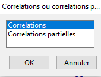
Figure 13.14: Choix du type de corrélations désirées.
Une fois ce choix réalisé, il faut préciser le jeu de données sur lequel les analyses vont être réalisées. S’il n’y a qu’un jeu de données dans la mémoire de R, ce sera ce jeu de données qui sera choisi par défaut. En l’occurrence, ce sera le bfi (Figure 13.15).
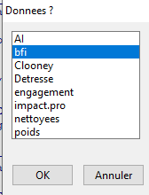
Figure 13.15: Choix du jeu de données.
Les matrices de corrélations peuvent être carrées ou rectangulaires.
Une matrice carrée est une matrice pour laquelle on fait les corrélations de l’ensemble des variables entre elles.
## A1 A2 A3 A4 A5
## A1 1.000 -0.340 -0.266 -0.147 -0.183
## A2 -0.340 1.000 0.485 0.335 0.388
## A3 -0.266 0.485 1.000 0.362 0.504
## A4 -0.147 0.335 0.362 1.000 0.308
## A5 -0.183 0.388 0.504 0.308 1.000A l’inverse, dans une matrice rectangulaire, on fait les corrélations entre un premier jeu de variables avec un second jeu de variables.
## A4 A5
## A1 -0.147 -0.183
## A2 0.335 0.388
## A3 0.362 0.504On va privilégier la matrice rectangulaire par rapport à la carrée quand on va tester des hypothèses et qu’on va interpréter les corrélations significatives. En effet, on ne testera que les corrélations qui correspondent à des hypothèses diminuant donc le nombre de corrélations et la correction de la probabilité appliquée.
On privilégie les matrices carrées quand l’objectif est plus exploratoire ou quand il s’agit d’une étape préalable à une analyse factorielle par exemple.
Il va de soi qu’il y a des situations où les matrices carrées pourront être utilisées pour répondre à des hypothèses.
Dans ce cas, nous allons réaliser une matrice de corrélations carrée (Figure 13.16).
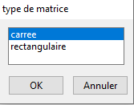
Figure 13.16: Choix du type de matrice de corrélations désirées.
L’étape suivante consiste à choisir les variables d’intérêt. En l’occurrence, nous choisirons les 5 variables d’agréabilité (Figure 13.17).
Si nous avions choisi un matrice rectangulaire, il aurait fallu choisir un premier jeu de données (par exemple les variables A1, A2 et A3) et ensuite un second jeu de données (par exemple A4 et A5).
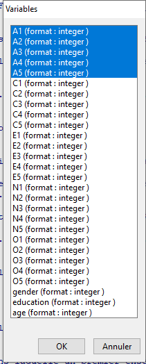
Figure 13.17: Choix des variables pour la matrice de corrélations.
Comme pour l’analyse complète, on peut faire les matrices de corrélations par sous-groupes. Si on choisit ‘oui’ (Figure 13.18), il faudra préciser la variable qualitative qui permettra de subdiviser l’échantillon en plusieurs sous-groupes.
Figure 13.18: Faut-il réaliser les analyses par sous-groupe ?
Comme pour l’analyse complète, la question qui se pose est de savoir si on fait la matrice de corrélations sur les données complètes ou sur les données pour lesquelles on a enlevé les valeurs influentes. Les valeurs influentes sont déterminées sur la base de la distance de Mahalanobis (Figure 13.19).
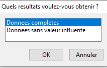
Figure 13.19: Faut-il supprimer les valeurs influentes avant de faire les analyses ?
En l’occurrence, nous avons choisi de ne pas les supprimer. Si nous avions choisi de les supprimer, Lorsque les choix ont été faits, easieR vous avertit du nombre d’observations considérées comme influentes (Figure 13.20). En l’occurrence, 1.11% des observations sont considérées comme influentes.
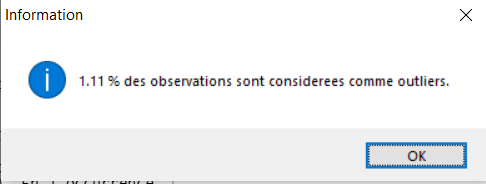
Figure 13.20: Pourcentage d’observations considérées comme influentes.
Lorsque ce pourcentage est différent de 0%, easieR vous propose de les supprimer toutes en une fois ou une par une. Le fait de les supprimer une par une permet de les identifier et comprendre pourquoi elles sont influentes. En l’occurrence, à titre de démonstration, nous les enlèverons une par une (Figure 13.21).
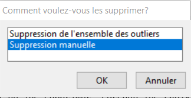
Figure 13.21: Faut-il supprimer les valeurs influentes avant de faire les analyses ?
Quand on choisit de supprimer les observations manuellement, la valeur la plus extrême avec l’identifiant du participant et sa distance de Mahalanobis est affiché dans la console (Figure 13.22). Il faut appuyer sur entrée pour continuer.
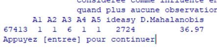
Figure 13.22: Valeur la plus extrêment considérée comme influente.
Après avoir analysé l’observation, easieR va proposer si vous souhaitez la supprimer (Figure 13.23). Si vous cliquez que “oui”, easieR va supprimer cette observation, et détecter l’observation suivante la plus influente. Cette opération est réitérée jusqu’à ce plus aucune observation ne soit considérée comme influente ou jusqu’à ce que l’utilisateur ne veuille plus supprimer les observations.
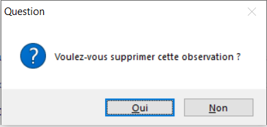
Figure 13.23: Faut-il supprimer la dernière observations affichée dans la console et considérée comme étant la plus influente encore dans le jeu de données.
ATTENTION Dans le cas où les observations sont supprimées manuellement une à une et qu’elles ne sont pas toutes, il peut y avoir un problème de reproductibilité du code.
Quand on utilise easieR en ligne de commande, il peut faire l’analyse sur l’échantillon complet ou sur l’échantillon sans les valeurs influentes. En revanche, la ligne de commande ne prévoit pas la situation où seules certaines observations influentes sont supprimées de l’échantillon. Si naturellement, on pourrait considérer qu’on enlève ou non les valeurs influentes, des situations intermédiaires pourraient survenir, à la condition d’avoir fixé le critère de suppression A PRIORI.
L’étape suivante consiste à choisir le type de corrélations que vous souhaitez. Naturellement, on a tendance à choisir les corrélations de Bravais-Pearson. Notez néanmoins que les variables étant ordinales ici, les \(\rho\) de Spearman ou les \(\tau\) de Kendall aurait pu/dû être privilégiés (Figure 13.24).
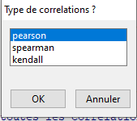
Figure 13.24: Faut-il supprimer la dernière observations affichée dans la console et considérée comme étant la plus influente encore dans le jeu de données.
Vous aurez encore la possibilité de faire l’analyse en adoptant les tests d’hypothèse nulle, les facteurs bayesiens ou les deux (Figure 13.25). En l’occurrence, nous focaliserons uniquement sur les tests d’hypothèse nulle.
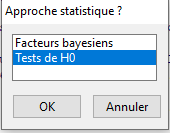
Figure 13.25: Choix entre tests d’hypothèse nulle, facteurs bayesiens ou les deux.
Lorsque les tests d’hypothèse nulle ont été choisis, il faut corriger la probabilité pour éviter la multiplication de l’erreur de première espèce. LA correction la plus connue est la correction de Bonferroni mais la correction de Holm représente un choix plus judificieux (Figure 13.26). En effet, cette correction contrôle autant le risque de commettre une erreur de première espèce mais contrôle mieux le risque de commettre une erreur de seconde espèce.
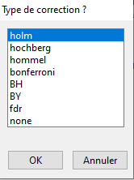
Figure 13.26: Choix du type de correction pour maintenir l’erreur de première espèce par famille constant.
Lorsque des valeurs sont manquantes dnas le jeu de données, easieR vous force à prendre une décision. Il commence par indiquer que certaines observations sont manquantes (Figure 13.27).
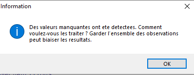
Figure 13.27: Gestion des valeurs manquantes sur les variables qui sont analysées.
Il faut donc prendre une décision (Figure 13.28). Une première décision peut être de faire les analyses avec les informations disponibles et de continuer avec l’échantillon tel qu’il est. Cela peut se justifier sur un grand échantillon où il y a peu de valeurs manquantes. En revanche, c’est plus embêtant quand les valeurs manquantes sont nombreuses sur certaines variables et beaucoup moins fréquentes sur d’autres. La raison du souci est que la significativité n’est plus estimée en utilisant les mêmes degrés de liberté. Plusieurs solutions peuvent être envisagées pour avoir l’ensemble des corrélations calculées sur la même taille d’échantillon. On peut supprimer les observations où il y a des valeurs manquantes (au risque de perdre en puissance statistique). On peut égaleent remplacer les observations par la moyenne (pour les variables continues) ou par la médiane (pour les variables continues et ordinales). Enfin, il est possible de s’appuyer sur les corrélations avec les autres variables pour imputer la valeur que le participant aurait dû avoir au regard de ses scores aux autres variables. C’est ce qu’on appelle l’imputation multiple. Il existe plusieurs méthodes, Dans le cas de easieR, il s’appuie sur le package Amelia.
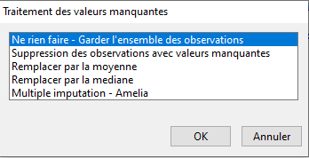
Figure 13.28: Choix possibles pour traiter les valeurs manquantes.
Comme précédemment, on termine en décidant si on souhaite sauvegarder les résultats.
13.3.1.2 Avec les lignes de commande
A nouveau, il est possible de réaliser des matrices de corrélations en utilisant la fonction corr.matrice()
X : caractère qui correspond au nom du premier ensemble de variables (si Y n’est pas précisé, crée une matrice carrée) ;
Y : caractère qui correspond au nom du second ensemble de variables ;
Z : caractère qui correspond des variables variables à contrôler (pour des corrélations parielles) ;
data : nom du jeu de données ;
group : caractère correspondant à la ou aux variables permettant de réaliser les analyses par groupe (voir section consacrée à cet effet) ;
param : caractère indiquant quelles analyses doivent être faites. Les valeurs autorisées sont : ‘Test de H0’, ‘Facteurs bayesiens’, ou leur version abrégée, à savoir ‘FB’ et ‘H0’.
method : type de corrélations souhaitées. Il s’agit d’une valeur de type caractère parmi “pearson”, “spearman”, “kendall”.
p.adjust : type de correction des probabilités pour contrôler l’erreur de famille. Il s’agit une valeur caractère à choisir parmi : “holm”, “hochberg”, “hommel”, “bonferroni”, “BH”, “BY”,“fdr”, “none”
save : logique indiquant s’il faut une sauvegarde en fichier msword
outlier : caractère indiquant si les analyses doivent être réalisées sur l’ensemble des données, s’il faut identifier les valeurs influentes et s’il faut réaliser l’analyse sans les valeurs influentes. Les valeurs autorisées sont : ‘Donnees completes’,‘Donnees sans valeur influente’.
info : il s’agit d’un logique qui indique si des messages d’informations doivent être affichés dans la console pour expliquer à quoi correspond les boîtes de dialogue. Par défaut, la valeur est TRUE.
rscale : il s’agit du prior pour les facteurs bayesiens. Cela correspond approximativement à la valeur de la corrélation qu’on s’attend à avoir.
n.boot : nombre du bootstrap pour les statistiques robustes et pour le posterior des facteurs bayesiens
html : logique. Indique s’il faut une sortie html.
corr.matrice(X=c('A1','A2','A3','A4','A5'),
Y=NULL, Z =NULL,data=bfi, method="pearson",
p.adjust='holm', group=NULL,
param=c('Tests de H0'), save=FALSE,
outlier=c('Donnees completes'), info=T, rscale=NULL, n.boot=1, html=T) ATTENTION Dans le cas où il y a des valeurs manquantes qui n’ont pas été traitées avant de réaliser l’analyse, easieR va le détecter comme une décision à prendre, il faut donc terminer l’analyse avec les boîtes de dialogue.
13.3.2 Interpréter la sortie de résultats
Dans la sortie de résultats, le premier tableau (Tableau 21). A cette étape, on va être attentif au nombre d’observations (est-ce que je fais bien l’analyse sur tout mon échantiillon), au minimum, au maximum (est-ce que ces valeurs sont compatibles avec mes données), à la moyenne et à la médiane (si elles sont proches, c’est que la distribution est symétrique, sinon ce n’est pas le cas). Remarquez en l’occurrence, qu’il peut y avoir jusqu’à une centaine d’observations en moins sur certaines variables. Cela doit donc amener à s’interroger sur la pertinence d’avoir choisi de ne rien faire pour les valeurs manquantes.
| Variables.numériques.vars | Variables.numériques.n | Variables.numériques.mean | Variables.numériques.sd | Variables.numériques.median | Variables.numériques.trimmed | Variables.numériques.mad | Variables.numériques.min | Variables.numériques.max | Variables.numériques.range | Variables.numériques.skew | Variables.numériques.kurtosis | Variables.numériques.se | |
|---|---|---|---|---|---|---|---|---|---|---|---|---|---|
| A1 | 1 | 2.76e+03 | 2.41 | 1.41 | 2 | 2.23 | 1.48 | 1 | 6 | 5 | 0.822 | -0.311 | 0.0268 |
| A2 | 2 | 2.76e+03 | 4.8 | 1.17 | 5 | 4.97 | 1.48 | 1 | 6 | 5 | -1.12 | 1.06 | 0.0223 |
| A3 | 3 | 2.74e+03 | 4.6 | 1.3 | 5 | 4.78 | 1.48 | 1 | 6 | 5 | -0.996 | 0.432 | 0.0249 |
| A4 | 4 | 2.74e+03 | 4.69 | 1.48 | 5 | 4.92 | 1.48 | 1 | 6 | 5 | -1.03 | 0.0265 | 0.0283 |
| A5 | 5 | 2.74e+03 | 4.56 | 1.26 | 5 | 4.71 | 1.48 | 1 | 6 | 5 | -0.849 | 0.167 | 0.024 |
Le second tableau permet de vérifier si la multinormalité est respectée (Tableau 22). Cette multinormalité n’est affichée que pour les corrélations de Bravais-Pearson. En l’occurrence, ce n’est pas le cas. En effet, tant la symétrie (skewness) n’est pas respectée (il y a asymétrie) et il y a soit un aplatissement ou plutôt pointue. En l’occurrence, la valeur étant plutôt élevée, on doit considérée que la distribution est trop pointue pour une distribution normale. Il aurait donc été préférable de faire des \(\rho\) de Spearman ou des \(\tau\) de Kendall.
| n | test | Statistique de Mardia | valeur.p | |
|---|---|---|---|---|
| 1 | 2709 | Asymetrie multivariee de Mardia | 5.26 | <.0001 |
| 2 | 2709 | Aplatissement multivariee de Mardia | 45 | <.0001 |
| 3 | 2709 | Asymetrie multivariee de Mardia pour petits echantillons | 2.38e+03 | <.0001 |
Le troisième tableau est le tableau avec les corrélations (Tableau 23).
| A1 | A2 | A3 | A4 | A5 | |
|---|---|---|---|---|---|
| A1 | - | -0.34 | -0.266 | -0.147 | -0.183 |
| A2 | - | - | 0.485 | 0.335 | 0.388 |
| A3 | - | - | - | 0.362 | 0.504 |
| A4 | - | - | - | - | 0.308 |
| A5 | - | - | - | - | - |
Comme le nombre d’observations n’est pas le même pour toutes les variables, le tableau suivant informe sur le nombre d’observations utilisées pour chaque corrélation 2 à 2 (Tableau 24).
| A1 | A2 | A3 | A4 | A5 | |
|---|---|---|---|---|---|
| A1 | 2.76e+03 | 2.76e+03 | 2.74e+03 | 2.74e+03 | 2.74e+03 |
| A2 | 2.76e+03 | 2.76e+03 | 2.74e+03 | 2.74e+03 | 2.74e+03 |
| A3 | 2.74e+03 | 2.74e+03 | 2.74e+03 | 2.72e+03 | 2.72e+03 |
| A4 | 2.74e+03 | 2.74e+03 | 2.72e+03 | 2.74e+03 | 2.73e+03 |
| A5 | 2.74e+03 | 2.74e+03 | 2.72e+03 | 2.73e+03 | 2.74e+03 |
Le Tableau 25 donne les probabilités associées à chacune des probabilités. Il faut noter ici que les données au-dessus de la diagonales ont été corrigées en appliquant la correction de Holm (notre choix), tandis que celles en-dessous n’ont pas été corrigées. Cela permet d’identifier les corrélations qui sont significatives sans corrections et qui deviennent non significatives après correction. Ces corrélations sont sans doute de l’erreur de première espèce. En l’occurrence, corrigées ou non, toutes les corrélations sont significatives.
| A1 | A2 | A3 | A4 | A5 | |
|---|---|---|---|---|---|
| A1 | 0 | 0 | 0 | 0 | 0 |
| A2 | 0 | 0 | 0 | 0 | 0 |
| A3 | 0 | 0 | 0 | 0 | 0 |
| A4 | 0 | 0 | 0 | 0 | 0 |
| A5 | 0 | 0 | 0 | 0 | 0 |
Ces corrélations sont représentées sous la forme d’un heatmap afin de pouvoir identifier plus facilement et plus rapidement les corrélations significatives.

Il est toujours appréciable d’identifier le pourcentage de variance expliquée lorsqu’on réalise une corrélation. La matrice des R² (Tableau 26) fournit cette information.
| A1 | A2 | A3 | A4 | A5 | |
|---|---|---|---|---|---|
| A1 | - | 0.116 | 0.071 | 0.021 | 0.033 |
| A2 | - | - | 0.235 | 0.112 | 0.15 |
| A3 | - | - | - | 0.131 | 0.254 |
| A4 | - | - | - | - | 0.095 |
| A5 | - | - | - | - | - |
Pour terminer,il y a un tableau de synthèse avec l’intervalle de confiance, la valeur de la corrélation et la probabilité associée. En l’occurrence, l’intervalle de confiance sur la corrélation est calculé sur la base d’une distribution normale. Si nous avions choisi les statistiques robustes, il aurait été estimé sur la base de boostrap (Tableau 27)
| lim.inf | r | lim.sup | valeur.p | |
|---|---|---|---|---|
| A1-A2 | -0.373 | -0.34 | -0.307 | <.0001 |
| A1-A3 | -0.301 | -0.266 | -0.231 | <.0001 |
| A1-A4 | -0.183 | -0.147 | -0.11 | <.0001 |
| A1-A5 | -0.219 | -0.183 | -0.146 | <.0001 |
| A2-A3 | 0.456 | 0.485 | 0.513 | <.0001 |
| A2-A4 | 0.301 | 0.335 | 0.368 | <.0001 |
| A2-A5 | 0.356 | 0.388 | 0.419 | <.0001 |
| A3-A4 | 0.329 | 0.362 | 0.394 | <.0001 |
| A3-A5 | 0.475 | 0.504 | 0.531 | <.0001 |
| A4-A5 | 0.274 | 0.308 | 0.341 | <.0001 |
Par ailleurs, noter dans la sortie HTML, qu’il y a une page qui s’ouvre avec la matrice uniquement, comprenant la valeur de la corrélation, la probabilité et le pourcentage de variance expliquée. L’objectif est de facilité les copier-coller quand on veut reporter la matrice dans un article.
13.3.3 Exercices
13.3.3.1 Enoncés
Un professeur de statistiques veut développer un nouvel outil pour mieux cerner les difficultés de ses étudiants. Il se demande s’il va pouvoir utiliser son questionnaire pour pouvoir apporter l’aide appropriée en fonction des difficultés de ses étudiants. Voici le questionnaire :
Pour les items qui suivent, veuillez préciser à quel point vous vous reconnaissez sur une échelle allant de fortement en désaccord (FD = 1), désaccord (D), neutre (N), accord (A), fortement d’accord (FA = 5). (cet exemple est inspiré de Field et al., 2013)
- Les statistiques me font pleurer
- Mes amis pensent que je suis stupide de ne pas être capable d’utiliser R
- Les écart-types, ça m’excite
- Je rêve que Pearson m’attaque avec des coefficients de corrélation
- Je ne comprends rien aux statistiques
- J’ai peu d’expérience avec les ordinateurs
- Les ordinateurs me détestent
- Je n’ai jamais été bon en mathématique
- Mes amis sont meilleurs que moi en statistiques
- Les ordinateurs, c’est seulement fait pour jouer
- Je m’en sortais mal en mathématiques à l’école
- Les gens essaient de t’expliquer que R rend les statistiques plus simples à comprendre, mais c’est pas vrai
- Je m’inquiète de créer des dégâts irréparables sur les ordinateurs en raison de mon incompétence
- Les ordinateurs ont leur propre volonté et décident volontairement de ne pas fonctionner quand je les utilise
- Les ordinateurs ne me comprennent pas
- Je sanglote ouvertement quand j’entends « tendance centrale »
- Je m’évanouis dès que je vois une équation
- R crash chaque fois que je l’utilise
- Tout le monde me regarde quand j’utilise R
20.. Je n’arrive plus à dormir parce que je rumine sur les valeurs propres
- Je me réveille sous ma couverture en étant persuadé que je suis piégé sous une distribution normale
- Mes amis sont meilleurs que moi pour utiliser R
- Si je suis bon en statistiques, mes amis vont penser que je suis un nerd
Importer le fichier diff.stat, réaliser une matrice de corrélations carrée sur l’ensemble des variables. Analysez la sortie de résultats. Vous pouvez le faire en boîte de dialogue ou en ligne de commande. Identifiez les corrélations qui ne sont pas significatives après correction alors qu’elles le sont avant correction.
13.3.3.2 Correction
Pour les personnes qui ont choisi de réaliser l’analyse en ligne de commande, il peut être fastidieux de renommer l’ensemble des variables.
On peut aller beaucoup plus vite grâve à la fonction dput qui n’est pas dans easieR.
L’idée est de faire un vecteur avec le nom des variables :
import(file='illustration.easieR.xlsx',
dir="./introR/",
type='Fichier Excel',
dec='.',
sep=';',
na.strings='NA',
sheet='diff.stat',
name='diff.stat')## [1] "Dans quel format est enregistre votre fichier ?"
## Veuillez specifier la feuille de calcul que vous souhaitez importer
## Des caracteres non autorises ont ete utilises pour le nom. Ces caracteres ont ete remplaces par des points
## 'data.frame': 2571 obs. of 23 variables:
## $ Q01: num 4 5 4 3 4 4 4 4 3 4 ...
## $ Q02: num 5 5 3 5 5 5 3 4 3 2 ...
## $ Q03: num 2 2 4 5 3 3 3 3 5 2 ...
## $ Q04: num 4 3 4 2 4 4 4 4 2 3 ...
## $ Q05: num 4 4 2 3 4 2 4 4 1 4 ...
## $ Q06: num 4 4 5 3 3 2 4 4 3 5 ...
## $ Q07: num 3 4 4 2 3 2 4 4 1 4 ...
## $ Q08: num 5 4 4 4 4 4 4 4 1 4 ...
## $ Q09: num 5 1 4 4 2 2 3 2 3 3 ...
## $ Q10: num 4 4 4 2 4 3 4 4 3 4 ...
## $ Q11: num 5 4 3 4 4 4 4 4 1 4 ...
## $ Q12: num 4 3 3 4 3 2 4 3 1 3 ...
## $ Q13: num 4 5 4 4 3 3 4 4 1 4 ...
## $ Q14: num 4 3 2 3 4 3 4 4 1 5 ...
## $ Q15: num 4 2 4 3 4 1 4 3 1 4 ...
## $ Q16: num 3 3 3 3 4 4 4 4 1 3 ...
## $ Q17: num 5 4 4 4 4 3 4 4 1 4 ...
## $ Q18: num 4 4 3 2 3 1 4 4 1 4 ...
## $ Q19: num 3 3 5 4 3 5 3 2 4 3 ...
## $ Q20: num 4 2 2 2 2 1 4 3 1 3 ...
## $ Q21: num 4 2 3 2 4 3 4 4 1 4 ...
## $ Q22: num 4 2 4 2 2 5 2 2 3 2 ...
## $ Q23: num 1 4 4 3 2 2 2 2 3 2 ...## [[1]]
## [1] "les donnees ont ete importees correctement"
##
## $call
## [1] "import(file='illustration.easieR.xlsx',dir='C:/Users/stefan01/OneDrive - URCA/reims/cours_Reims/Cours de statistiques/Livre/introR',type='Fichier Excel',dec='.',sep=';',na.strings='NA',sheet='diff.stat',name='diff.stat')"## c("Q01", "Q02", "Q03", "Q04", "Q05", "Q06", "Q07", "Q08", "Q09",
## "Q10", "Q11", "Q12", "Q13", "Q14", "Q15", "Q16", "Q17", "Q18",
## "Q19", "Q20", "Q21", "Q22", "Q23")On peut ensuite réaliser la matrice de corrélation en faisant un copier coller du vecteur.
corr.out<-corr.matrice(X=c("Q01", "Q02", "Q03", "Q04", "Q05", "Q06", "Q07", "Q08", "Q09",
"Q10", "Q11", "Q12", "Q13", "Q14", "Q15", "Q16", "Q17", "Q18",
"Q19", "Q20", "Q21", "Q22", "Q23"),
Y=NULL, Z =NULL,data=diff.stat,
p.adjust='holm', group=NULL,
param=c('Tests de H0'), save=FALSE,
outlier=c('Donnees completes'), info=T, rscale=NULL, n.boot=1)Il y a de nombreuses corrélations qui perdent leur significativité après correction. C’est notamment le cas entre la variable 2 et 6.